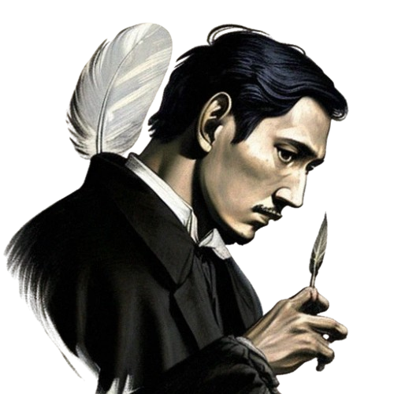

Rizal spent his early childhood in the town of Calamba. He had many
fond memories of exploring the forests and rivers near his home. Rizal
also had a strong religious upbringing, regularly attending church and prayers.
He began writing poetry at a young age and showed an early talent for art and drama.
Introduction to José Rizal

José Protasio Rizal Mercado y
Alonso Realonda
Born: June 19, 1861, Calamba, Philippines
Died: December 30, 1896, Manila (aged 35)
José Protasio Rizal Mercado y Alonso Realonda was a Filipino nationalist, writer, and polymath active at the end of the Spanish colonial period of the Philippines. He is considered a national hero (pambansang bayani) of the Philippines. An ophthalmologist by profession, Rizal became a writer and a key member of the Filipino Propaganda Movement, which advocated political reforms for the colony under Spain.